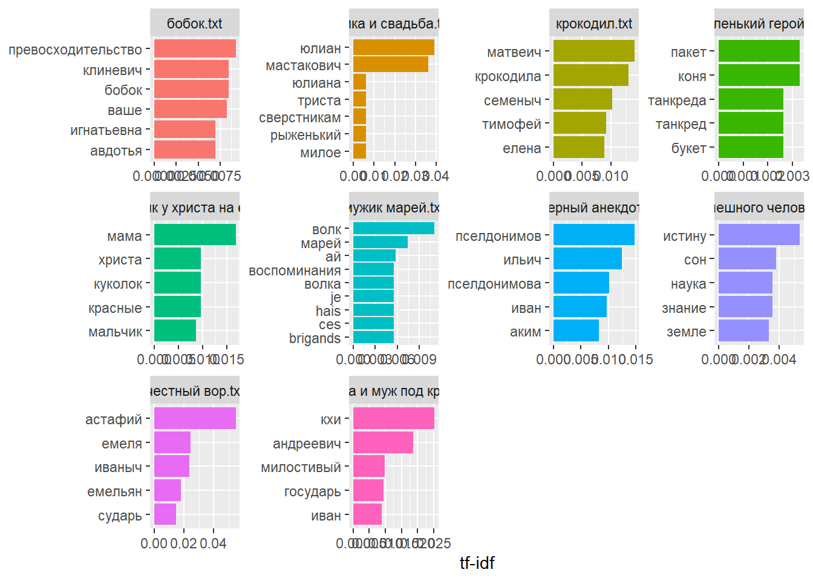
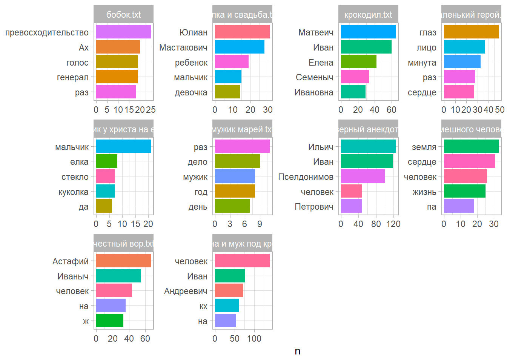

library(qpdf)
library(pdftools)
pdf_subset(input = "./full texts/том_2.pdf",
output = "./corpus/честный вор.pdf",
pages = c(84:96))
pdf_subset(input = "./full texts/том_2.pdf",
output = "./corpus/елка и свадьба.pdf",
pages = c(97:103))
pdf_subset(input = "./full texts/том_2.pdf",
output = "./corpus/елка и свадьба.pdf",
pages = c(97:103))
pdf_subset(input = "./full texts/том_2.pdf",
output = "./corpus/маленький герой.pdf",
pages = c(270:297))
pdf_subset(input = "./full texts/том_2.pdf",
output = "./corpus/чужая жена и муж под кроватью.pdf",
pages = c(51:83))
pdf_subset(input = "./full texts/том_5.pdf",
output = "./corpus/скверный анекдот.pdf",
pages = c(7:47))
pdf_subset(input = "./full texts/том_5.pdf",
output = "./corpus/крокодил.pdf",
pages = c(182:209))
pdf_subset(input = "./full texts/том_21.pdf",
output = "./corpus/бобок.pdf",
pages = c(43:56))
pdf_subset(input = "./full texts/том_22.pdf",
output = "./corpus/мальчик у христа на елке.pdf",
pages = c(16:19))
pdf_subset(input = "./full texts/том_22.pdf",
output = "./corpus/мужик марей.pdf",
pages = c(48:52))
pdf_subset(input = "./full texts/том_25.pdf",
output = "./corpus/сон смешного человека.pdf",
pages = c(106:121))About
Подготовка корпуса
Вырежем интересующие нас рассказы из pdf полных томов и запишем в папку corpus.
Извлечение текста из pdf с помощью {tesseract}
Наши pdf хранят уже распознанный текст. Проверим это.
library(tesseract)
library(tesseractgt)
elka_text <- pdf_text(pdf = "./corpus/елка и свадьба.pdf")
krokodile_text <- pdf_text(pdf = "./corpus/крокодил.pdf")
hero_text <- pdf_text(pdf = "./corpus/маленький герой.pdf")
marey_text <- pdf_text(pdf = "./corpus/мужик марей.pdf")
anekdot_text <- pdf_text(pdf = "./corpus/скверный анекдот.pdf")
vor_text <- pdf_text(pdf = "./corpus/честный вор.pdf")
wife_text <- pdf_text(pdf = "./corpus/чужая жена и муж под кроватью.pdf")
bobok_text <- pdf_text(pdf = "./corpus/бобок.pdf")
child_text <- pdf_text(pdf = "./corpus/мальчик у христа на елке.pdf")
dream_text <- pdf_text(pdf = "./corpus/сон смешного человека.pdf")С помощью регулярных выражений немного приберем полученные тексты.
library(stringr)
library(purrr)
clean_text <- function(text) {
text <- str_replace_all(text, "\\d+", "")
if (length(text) > 1) {
text <- paste(text, collapse = "\n")
}
lines <- str_split(text, "\n")[[1]]
non_empty_lines <- lines[str_trim(lines) != ""]
if (length(non_empty_lines) == 0) {
return("")
}
cleaned_text <- paste(non_empty_lines, collapse = "\n")
return(cleaned_text)
}
clean_anekdot_text <- clean_text(anekdot_text)
writeLines(clean_anekdot_text, con = "./clean corpus/скверный анекдот.txt")
clean_elka_text <- clean_text(elka_text)
writeLines(clean_elka_text, con = "./clean corpus/елка и свадьба.txt")
clean_bobok_text <- clean_text(bobok_text)
writeLines(clean_bobok_text, con = "./clean corpus/бобок.txt")
clean_child_text <- clean_text(child_text)
writeLines(clean_child_text, con = "./clean corpus/мальчик у христа на елке.txt")
clean_dream_text <- clean_text(dream_text)
writeLines(clean_dream_text, con = "./clean corpus/сон смешного человека.txt")
clean_hero_text <- clean_text(hero_text)
writeLines(clean_hero_text, con = "./clean corpus/маленький герой.txt")
clean_krokodile_text <- clean_text(krokodile_text)
writeLines(clean_krokodile_text, con = "./clean corpus/крокодил.txt")
clean_marey_text <- clean_text(marey_text)
writeLines(clean_marey_text, con = "./clean corpus/мужик марей.txt")
clean_vor_text <- clean_text(vor_text)
writeLines(clean_vor_text, con = "./clean corpus/честный вор.txt")
clean_wife_text <- clean_text(wife_text)
writeLines(clean_wife_text, con = "./clean corpus/чужая жена и муж под кроватью.txt")Я понимаю, что это можно было бы превратить в цикл, но не сообразила как. Поэтому получился громоздкий, некрасивый код. Но, по крайней мере, он работает.
Лемматизированный частотный словарь для корпуса с помощью {udpipe}
library(udpipe)Warning: пакет 'udpipe' был собран под R версии 4.5.2library(tidyverse)
library(tidytext)
library(dplyr)
library(readr)
library(stopwords)
library(ggplot2)
corpus_files <- list.files("clean corpus", full.names = TRUE)
read_text <- function(file){
read_lines(file) |>
str_c(collapse = " ")
}
corpus_texts <- tibble(
title = corpus_files,
text = map_chr(corpus_files, read_text)
)
corpus_sep <- corpus_texts |>
mutate(title = str_remove(title, "clean corpus/"))
corpus_words <- corpus_sep |>
unnest_tokens(word, text)
sw <- stopwords("ru")
custom_sw <- c(sw, "это", "все", "всё","лишь","меж","m", "me", "km", "a", "b", "c", "d", "e", "f", "g", "h", "i", "j", "k", "l", "n", "o", "p", "q", "r", "s", "t", "u", "v", "w", "x", "y", "z")
corpus_sw_words <- corpus_words |>
filter(!word %in% custom_sw)
text_word_counts <- corpus_sw_words |>
count(title, word, sort = T)
text_word_tfidf <- text_word_counts |>
bind_tf_idf(word, title, n)
text_word_tfidf |>
group_by(title) |>
arrange(-tf_idf) |>
top_n(5) |>
ungroup() |>
ggplot(aes(reorder_within(word, tf_idf, title), tf_idf, fill = title)) +
geom_col(show.legend = F) +
labs(x = NULL, y = "tf-idf") +
facet_wrap(~title, scales = "free") +
scale_x_reordered() +
coord_flip()
model <- udpipe_download_model("russian")Downloading udpipe model from https://raw.githubusercontent.com/jwijffels/udpipe.models.ud.2.5/master/inst/udpipe-ud-2.5-191206/russian-gsd-ud-2.5-191206.udpipe to C:/Users/katya/Documents/dostoyevsky_project/russian-gsd-ud-2.5-191206.udpipe - This model has been trained on version 2.5 of data from https://universaldependencies.org - The model is distributed under the CC-BY-SA-NC license: https://creativecommons.org/licenses/by-nc-sa/4.0 - Visit https://github.com/jwijffels/udpipe.models.ud.2.5 for model license details. - For a list of all models and their licenses (most models you can download with this package have either a CC-BY-SA or a CC-BY-SA-NC license) read the documentation at ?udpipe_download_model. For building your own models: visit the documentation by typing vignette('udpipe-train', package = 'udpipe')Downloading finished, model stored at 'C:/Users/katya/Documents/dostoyevsky_project/russian-gsd-ud-2.5-191206.udpipe'ud_model <- udpipe_load_model(model$file_model)
corpus_ann <- udpipe_annotate(ud_model, corpus_sep$text, doc_id = corpus_sep$title)
corpus_pos <- as_tibble(corpus_ann) |>
select(-paragraph_id)
corpus_pos |>
filter(upos == "NOUN") |>
select(doc_id, token, lemma, upos, xpos)# A tibble: 16,999 × 5
doc_id token lemma upos xpos
<chr> <chr> <chr> <chr> <chr>
1 бобок.txt деревне деревня NOUN NN
2 бобок.txt откровение откровение NOUN NN
3 бобок.txt чертах черта NOUN NN
4 бобок.txt Искуситель Искуситель NOUN NN
5 бобок.txt г-на г-н NOUN NN
6 бобок.txt комедии комедия NOUN NN
7 бобок.txt живи живь NOUN NN
8 бобок.txt плоховат плоховатый NOUN NN
9 бобок.txt Жаль жаль NOUN NN
10 бобок.txt тут тут NOUN NN
# ℹ 16,989 more rowsnouns <- corpus_pos |>
filter(upos %in% c("NOUN", "PROPN")) |>
count(doc_id, lemma, sort = TRUE)
nouns |>
group_by(doc_id) |>
slice_head(n = 5) |>
ggplot(aes(reorder_within(lemma, n, doc_id), n, fill = lemma)) +
geom_col(show.legend = FALSE) +
theme_light() +
coord_flip() +
scale_x_reordered() +
facet_wrap(~ doc_id, scales = "free") +
xlab(NULL)
Я понимаю, что проект сделан из рук вон некачественно и плохо, но к концу года силы совсем покинули меня. Хотелось бы сделать что-то хорошее, надеюсь, что это ещё впереди. Спасибо вам за курс, я правда научилась чему-то очень полезному, важному и новому (хотя, вероятно, этого не видно по этому проекту, но всё-таки это правда!)